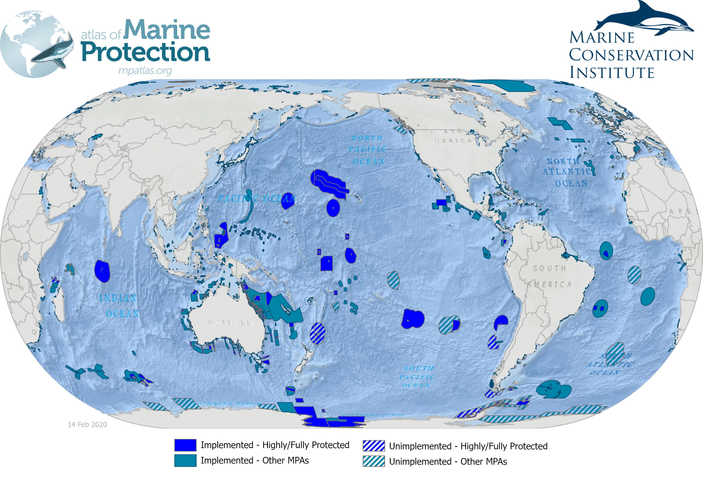
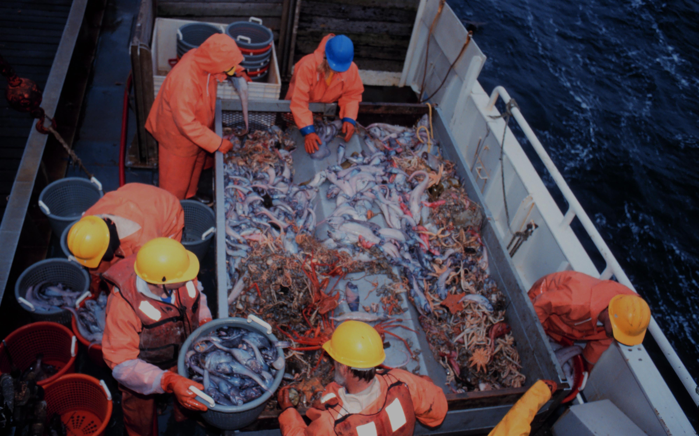
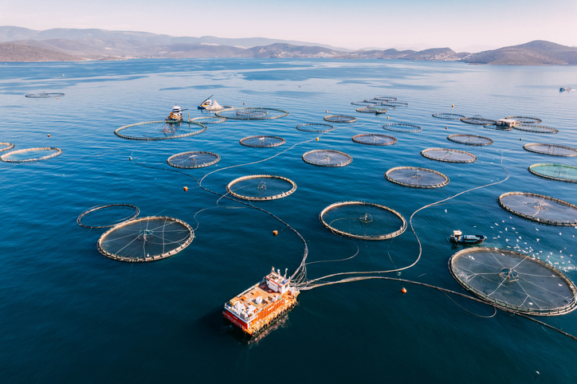

Indicateurs à suivre
Part des eaux marines en Aires protégées
En 2016, 30 % des eaux marines françaises sont en Aires maritimes protégées (contre 4 % en 2014).
État des stocks de pêche
Augmentation des stocks dans les limites biologiques de sécurité de 16 % à 30 % entre 2010 et 2016.
Tendances Lourdes
Aquaculture en croissance
Une réponse durable à la surpêche, permettant de satisfaire la demande croissante en protéines.
Engagement de la France
- Politique commune de la pêche (PCP).
- Moratoire sur la recherche d’hydrocarbures en Méditerranée.
- Initiative pour les récifs coralliens (IFRECOR).
Chiffres Clés (2010-2016)
- 63 % → 50 % : Stocks mieux étudiés.
- 16 % → 30 % : Stocks dans les limites biologiques de sécurité.
- 22 % → 20 % : Réduction des stocks hors des limites.